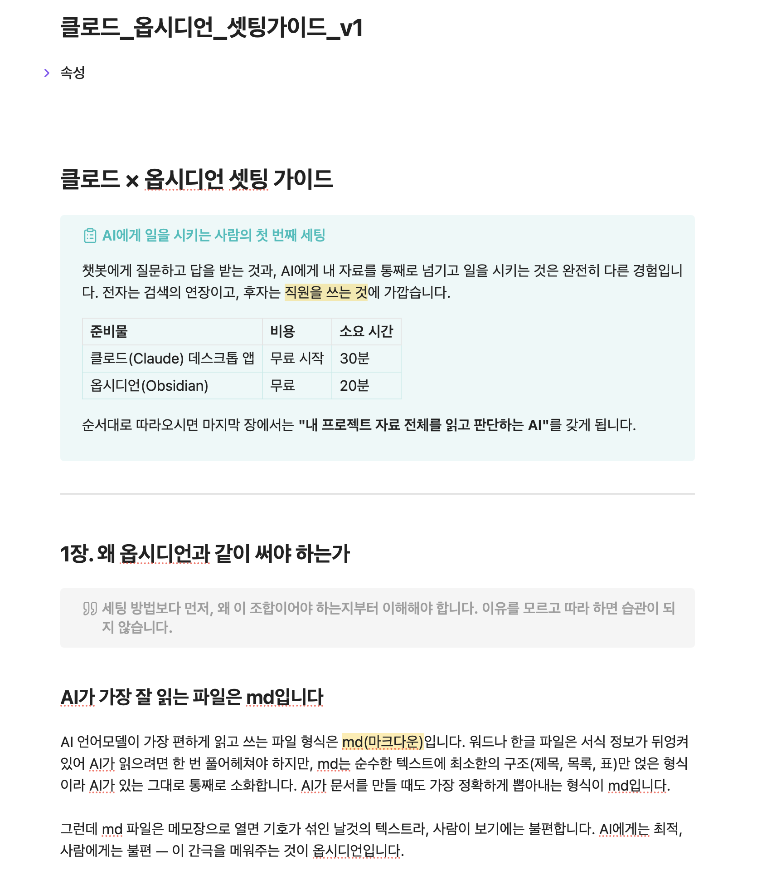
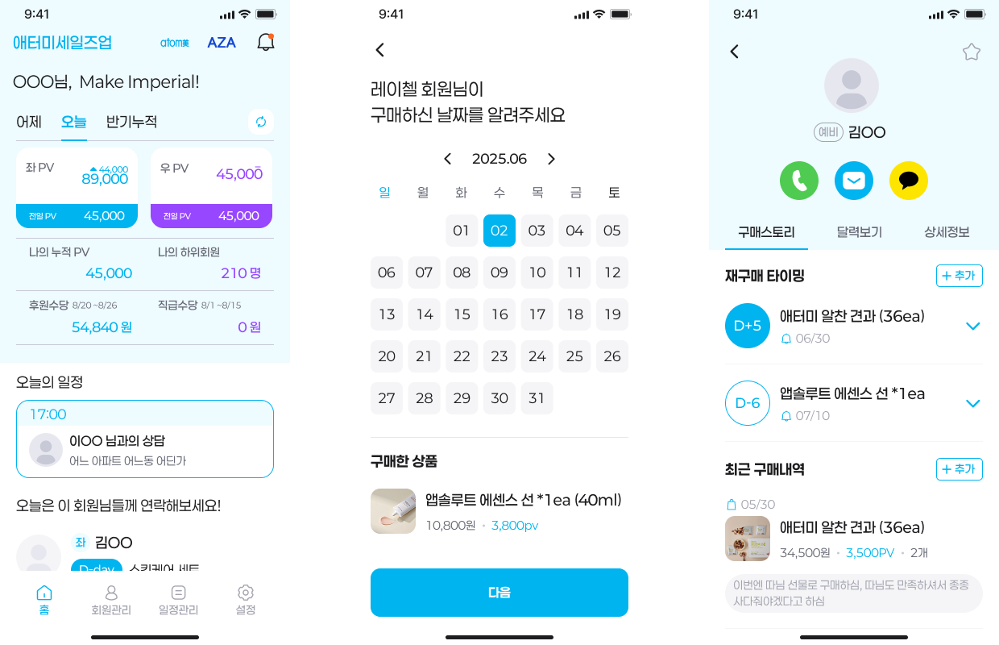
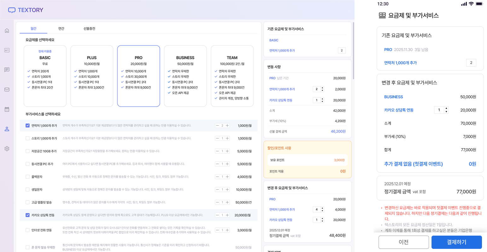
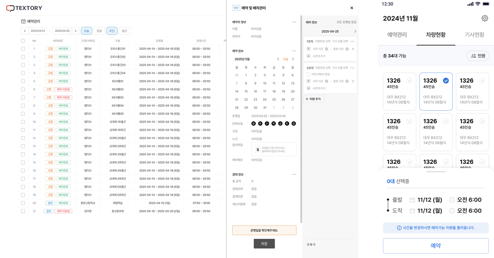
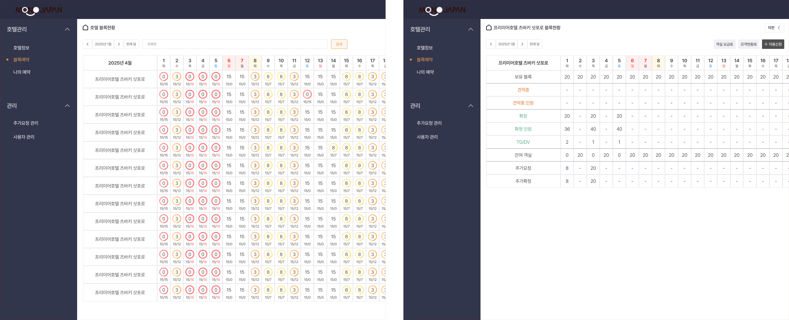
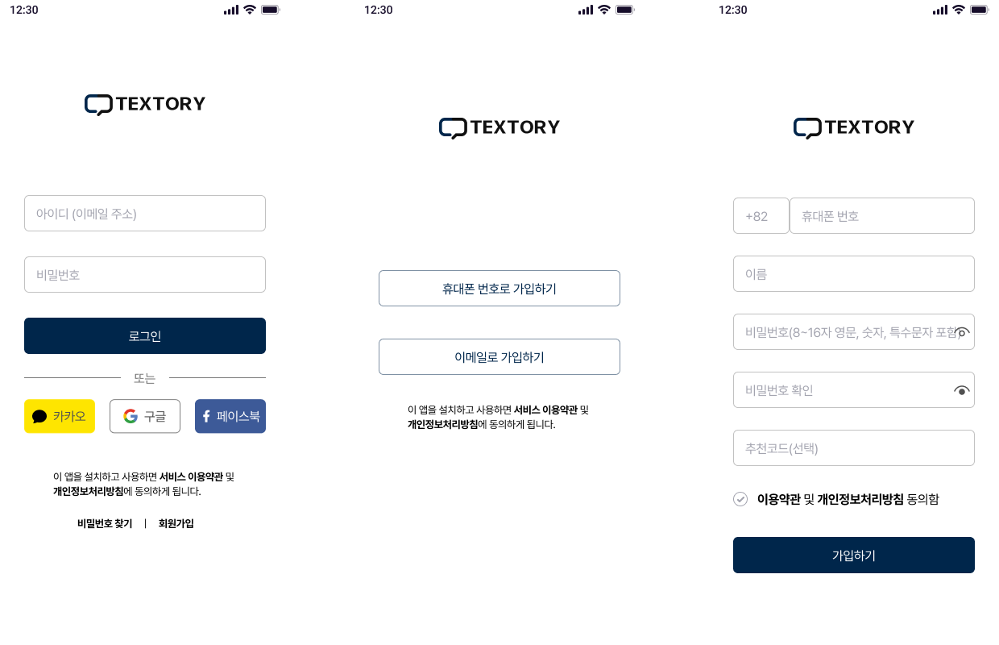

PRODUCT PLANNER · SERVICE PLANNER · BUSINESS PLANNER
데이터와 현장에서 문제를 찾고, 복잡한 요구를 정책과 화면으로 구조화하며, 출시와 운영까지 책임집니다.
시장·고객 분석→원인 분해→기준·정책 설계→예외 확인→실행·검증
B2B 0→1
신규 앱 기획·출시
노출 로직
홈 피드 룰·예외 설계
72건+
결제 케이스 직접 테스트
54건
B2B 영업·제안 자료 제작
01 CAREER TIMELINE
2026.03 – 2026.06
라텔앤드파트너스신규사업부 기획팀 PO
Cre8orClub v3.0 갤러리 담당, 피드 노출 로직·반응 정책 설계, TC·QA, 클로즈 베타와 초기 사용자 유입 운영
2025.02 – 2026.03
텍스토리주식회사서비스 기획 연구원
사내 유일 기획자, 요금제·가격 정책 개편, B2B 앱 출시, 영업 자료·마케팅 담당
2024.12 – 2025.01
안앤락플랫폼 기획
신사업·전략 기획 리서치, 데이터 수집·테스트
2022.07 – 2024.06
창업동아리 ONLY팀 대표
homey 0→1 앱 출시, 팀 구성, 사업계획서·IR 피칭, 지원금 집행
02 HOW TO WORK
AI를 업무 시스템으로 만드는 방식
같은 모델을 쓰는데도 결과가 갈리는 이유를 찾다가, 문제가 질문하는 방식이 아니라 AI가 놓인 환경에 있다고 봤습니다. 그래서 재료·기준·책임 세 가지를 순서대로 정리했습니다.
재료를 만든다
업무 기록을 AI가 읽을 수 있는 형태로 모으고 프로젝트마다 같은 구조를 유지
기준을 고친다
모델이 바뀔 때마다 작업 지침의 어긋난 문장을 찾아 고치고 변경 이력을 남김
책임을 남긴다
자동화할 일과 사람이 확인할 일을 나눠 설계
개인 업무 방식 정착 | 2025 – 진행 중
업무 자료를 구조화해 AI의 답변 품질을 높였습니다
AI에게 마케팅 방안을 물으면 어디서나 볼 수 있는 일반적인 대답이 나왔습니다. 프롬프트를 길게 써도 결과는 크게 달라지지 않았습니다. AI가 참고할 업무 자료가 흩어져 있는 것이 원인이었습니다.
흩어져 있던 상태
구조화한 뒤
회의록은 메신저에 남음
업무 기록을 AI가 읽을 수 있는 마크다운으로 통일
기획안과 데이터가 서로 다른 폴더와 파일에 있음
프로젝트마다 같은 폴더 구조 유지
새 대화마다 배경을 다시 설명함
현재 단계·역할·규칙·정본 위치를 지침 문서로 관리
지난 결정이 어디 있는지 찾지 못함
결정사항과 변경 이력을 다음 작업의 재료로 축적

동료와 친구가 그대로 적용할 수 있도록 정리해 공유한 세팅 가이드
같은 질문에도 실제 업무 상황에 맞는 답을 얻을 수 있었습니다. 이 방식을 동료와 친구도 적용할 수 있도록 세팅 가이드로 작성해 공유했습니다.
자료를 모아두고 그 위치를 알려주니 AI가 제 업무 상황에 맞는 답을 내기 시작했습니다.
작업 지침 관리 | 2025 – 진행 중
모델이 바뀔 때마다 작업 지침도 함께 고쳤습니다
모델이 바뀔 때마다 생기는 문제가 달랐습니다. 같은 지침을 계속 쓰면 작업이 너무 빨리 실행되거나 반대로 불필요하게 멈췄습니다. 도구를 바꾸는 대신 지침 문장을 고치는 쪽을 택했습니다.
구분
이전 모델
바뀐 모델
자주 생긴 문제
정보가 부족해도 바로 파일을 만들고 작업을 시작함
정보가 충분해도 허락을 묻고 작업을 멈춤
적용한 지침
중요한 결정은 멈추고 물으라고 지시
결과 방향이 달라질 때·되돌리기 어려운 작업·사용자만 아는 정보, 이 세 경우에만 질문하고 나머지는 가정을 밝힌 뒤 진행
새 모델 공개→공식 문서와 실제 결과 비교→반복되는 문장 수정→변경 이력 기록
기존 지침을 쓰는 중에도 같은 문제가 반복되면 그 문장을 바로 고쳤습니다. 지침을 한 번 만들고 두는 문서가 아니라 계속 고치는 문서로 다뤘습니다.
모델이 바뀌면 프롬프트를 다시 쓰기보다 지침의 어느 문장이 어긋났는지를 먼저 찾았습니다.
라텔앤드파트너스 | 사내 개인경비 신청 자동화
반복 경비 신청을 자동화했습니다
자동화 제작규칙표 작성팀 공유
영수증 분류, 회사 양식 작성, 이미지 묶음 생성은 매달 반복됐습니다. 문서 작성에 드는 시간을 줄이려고 자동화했습니다.
월초 알림→영수증 사진을 폴더로 이동→신청서·증빙 자동 생성→사람의 최종 확인
영수증 종류
조건
판정
택시
요일 무관
야근 교통비
식당·편의점·배달
평일
야근 식대
식당·편의점·배달
주말
휴일 식대
사람이 확인하도록 남긴 것
한도 적용으로 결제액과 청구액이 다른 항목
영수증에 없어 자동으로 알 수 없는 정보
판독이 흐리거나 별칭표에 없는 장소
과거 데이터에서 추정한 회사 정책
팀원이 각자 규칙표를 수정해 사용할 수 있는 형태로 공유했습니다.
자동화할 수 있는 일과 사람이 판단해야 하는 일을 구분해 설계했습니다.
03 PROJECTS
03-1
Cre8orClub 홈 피드 노출 로직 설계
라텔앤드파트너스 | 2026.04 – 2026.05
노출 로직·룰·예외 정의개발 명세 작성
데이터가 없는 출시 초기와 이후를 나눠 설계했습니다
출시 직후에는 추천에 사용할 행동 데이터가 없었습니다. 먼저 최근성과 무작위성의 단순 모델을 적용하고, 데이터가 쌓인 뒤 행동 점수·신선도·신규 작가 부스트를 더하는 2단계 로드맵을 설계했습니다.
점수만으로 정렬하면 같은 작가와 같은 종류의 콘텐츠가 화면을 채우고, 룰이 늘어나면 서로 충돌합니다. 그래서 처리 기준을 다음 순서로 정했습니다.
노출 자격›콘텐츠 비율›작가 다양성›카드 간격›점수
차단·비공개·테스터 계정은 점수와 무관하게 후보에서 제외
콘텐츠 풀이 부족하면 하위 룰부터 완화하되 빈자리는 만들지 않음
사용자가 행동을 취소하면 점수 원복
등록 직후에는 본인 게시물 확인 동선을 별도로 보장
점수 공식과 처리 순서, 예외별 기준을 개발자가 추가 질문 없이 구현할 수 있게 정리했습니다.
정상 케이스의 공식보다 예외 처리 기준과 룰 충돌 시 우선순위를 먼저 정해야 로직이 흔들리지 않는다는 것을 배웠습니다.
03-2
데이터로 광고 퍼널의 원인을 찾았습니다
라텔앤드파트너스 | 2026.04 – 2026.06 | 신규 크리에이터 플랫폼 초기 이용자 모집
광고 퍼널 재구성원인 분석개선안 작성
신청 단계를 1단계 줄였는데 전환율은 2.19%에서 1.50%로 하락했습니다. 서로 다른 모집단을 구분한 뒤 원인을 영향도 순서로 분석했습니다.
상세 설명 페이지를 없애며 랜딩의 설득 기능까지 삭제
광고 목표를 전환이 아닌 트래픽으로 설정
타깃 축소로 노출 단가 상승과 반응률 하락
가입 의지와 거리가 있는 릴스 지면으로 예산 희석
신청당 비용이 2.5배 악화된 것을 확인해 인스타그램 광고를 중단하고 남은 예산을 재편했습니다.
단계를 줄였지만, 사용자가 신청해야 할 이유도 함께 사라졌습니다.
03-3
제품을 시장에 연결하는 영업·마케팅
Cre8orClub | 2026.04 – 2026.06
초기 크리에이터 모집을 위해 인스타그램·X·스레드 채널을 세팅하고 콘텐츠와 광고를 직접 운영했습니다. 클로즈 베타에서 초대코드 53명에게 77개를 발송하고 같은 기간 신규 가입자 34명을 추적했으며, 갤러리 기획 오너로 정책·TC·QA를 병행해 제품이 보여주는 가치와 마케팅 메시지를 맞췄습니다.
텍스토리주식회사 | 2025 – 2026
약 38개 회사를 대상으로 회사소개서·서비스 제안서·팸플릿·협업 제안서 등 54건의 B2B 영업 자료를 제작했습니다. 복잡한 기능을 고객의 문제와 기대효과 중심으로 바꿔 영업 담당자가 현장에서 설명하기 쉽게 만들었고, 공식 블로그와 인스타그램을 운영하며 보도자료를 작성·의뢰해 기사 2건을 송출했습니다.
영업 자료는 보기 좋게 만드는 일이 아니라 상대의 문제와 의사결정 기준에 맞춰 제품의 가치를 번역하는 일이라고 배웠습니다.
03-4
세일즈업 B2B 앱 0→1 출시
텍스토리주식회사 | 2025.06 – 2025.10 | 5개월 · 기여도 100%
외부 파트너 협업타깃·업무 분석서비스·화면 기획일정 관리테스트
파트너의 요청을 실제 업무 흐름과 다섯 가지 핵심 기능으로 바꿨습니다
외부 파트너사의 4050 여성 사업자에게는 하위 회원, 구매 이력, 재구매 시점과 영업 일정을 한 번에 관리할 도구가 없었습니다.
영업 과정의 문제
기획한 기능
하위 회원 정보를 매번 확인
계정 연동으로 회원 정보 자동 불러오기
적절한 재구매 시점을 놓침
구매 기록 기반 재구매 알림
고객별 구매 이력이 흩어짐
상품·날짜·메모·후기 통합 관리
상품과 계정 정보를 직접 작성해 전달
선택만 하면 링크가 자동 생성되는 발송 흐름
미팅과 상담 일정 공유가 어려움
스케줄 관리와 상위 회원 공유

세일즈업 — 회원·구매 이력·재구매 알림·스케줄을 하나의 앱으로 통합
파트너 요구를 그대로 받아 적지 않고 실제 업무 과정을 기능과 우선순위로 재구성했습니다. Figma 화면 설계·디자인, 개발 커뮤니케이션, 일정 조율과 테스트를 총괄해 5개월 만에 B2B 신규 앱을 출시했습니다.
03-5
요금제·결제 정책 전면 개편
텍스토리주식회사 | 2025.05 – 2025.11 | 기여도 100%
사용 데이터 분석요금제·결제 정책 수립화면 설계일정 관리테스트
계정을 단속하는 대신, 어뷰징이 성립할 수 없는 구조를 만들었습니다
결제일을 악용해 한 달 요금으로 두 달치 문자를 보내는 어뷰징이 반복됐습니다. 기존 요금 구조는 고객이 이해하기 어려웠고, 결제사 변경으로 전 고객이 정기결제를 다시 등록해야 하는 이탈 위험도 있었습니다.

요금 구간·부가서비스 구조와 정기결제 재등록 플로우를 함께 설계
결제일 분포와 전후 사용량을 분석해 전 고객의 정기결제일을 매월 1일로 통일했습니다.
고객별 연락처·스토리 사용량을 요금 구간으로 바꾸고, 필요한 용량과 기능을 추가 구매하는 부가서비스 구조를 설계했습니다.
정기결제 재등록 플로우와 고객 반발을 낮추기 위한 첫 달 100원 프로모션을 함께 기획했습니다.
요금제·결제 화면을 설계하고 예외 조건을 포함한 72건 이상의 결제 케이스를 직접 검증했습니다.
구조 전환
결제일 어뷰징이 발생하기 어려운 구조
15%
전체 고객의 상위 요금제 이동
12건
신규 부가서비스로 기업고객 유치
어뷰징 계정을 매번 찾는 대신 결제일을 통일해 같은 방식의 어뷰징이 반복되지 않게 했습니다.
03-6
낯선 도메인을 서비스로 구조화
텍스토리주식회사 | 2025.02 – 2025.06
배차관리 솔루션 고도화

예약 → 배차 → 운행 → 정산으로 재구성한 운영 흐름
고객사 미팅과 반복 피드백을 통해 운행 이후 정산이 가장 큰 병목임을 확인했습니다. 예약과 배차 중심이던 서비스를 예약 → 배차 → 운행 → 정산으로 재구성하고 실비·영수증·기사 급여·차량 손익을 하나의 흐름으로 연결했으며, 운행 전 알림과 기사 준비 확인으로 지각·불참 같은 운영 리스크도 시스템이 미리 잡도록 설계했습니다.
랜드사 호텔 블록관리 시스템

캘린더 기반 블록 현황과 예약 신청·승인, 권한 관리
랜드사가 호텔 블록을 엑셀과 수기로 관리하다 중복 예약으로 손실이 발생하는 문제에서 시작했습니다. 낯선 관광 B2B 용어와 업무 규칙을 빠르게 학습해 캘린더 기반 블록 현황과 예약 신청·승인, 권한 관리로 이어지는 웹 서비스로 구현하고, 보유 블록을 넘는 예약은 추가 요청 건으로 자동 전환되도록 했습니다.
회원가입 퍼널 재설계

소셜 로그인·본인확인·필수 입력을 하나의 온보딩 흐름으로 연결
기존 가입은 이메일 인증 중심이라 아이디·비밀번호를 새로 만들고 여러 정보를 반복 입력해야 했습니다. 단계를 무조건 줄이기보다 소셜 로그인과 휴대폰 본인확인의 역할을 구분하고, 로그인·본인확인·필수 입력을 하나의 온보딩 흐름으로 연결했습니다. 퍼널 분석부터 화면 설계, 외부 연동 기획과 테스트까지 전 과정을 담당했습니다.
고객 환경과 운영 과제를 분석하면 제품이 다음에 가야 할 방향이 보인다는 것을 경험했습니다.
03-7
시장의 질문에서 시작한 앱 개발 프로젝트
창업동아리 ONLY | 2022.07 – 2024.06
픽카이브 | 2024.01 – 2024.06
잠재고객 35명 대면 인터뷰로 사업성 검증
어린이집·유치원의 사진 공유가 불편할 것이라는 가설을 검증하기 위해 관계자와 잠재고객 35명을 직접 만났습니다. 랜딩페이지로 관심도를 확인하고 지역 기관에 직접 전화해 초기 영업 접점을 만들었으며, 확인한 내용을 바탕으로 앱과 사업계획서를 설계하고 IR 피칭까지 진행해 Site 미니 아이코어 최우수상을 수상하고 예비창업패키지 서류를 통과했습니다.
homey | 2022.07 – 2024.06
개발자 5명을 모아 실제 앱 출시
여성 1인 가구가 집을 구할 때 범죄 위험과 주변 환경을 객관적으로 확인하기 어렵다는 문제에서 출발했습니다. 대학 커뮤니티에 아이디어를 올리고 개인 미팅을 거쳐 개발자 5명을 직접 섭외했고, 사용자 플로우와 단계별 개발 계획을 세워 기획·디자인·개발·배포 전 과정을 리드해 실제 앱을 출시했습니다. 2,260만 원 규모 지원금의 계약서·세금계산서·결과보고 등 증빙도 단독으로 관리했습니다.